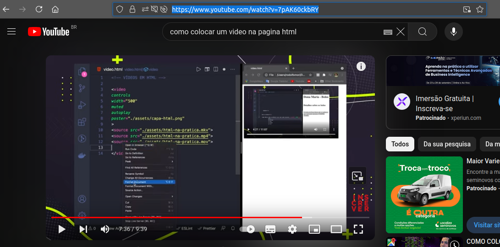

Para adicionar um video na página primeiramente precisamos baixar todos os arquivos na áreo de trabalho como na
aula 12 baixar arquivo Github, com os arquivos na área de trabalho precisamos do video também na área de
trabalho, para isso precisamos baixar um video, caso queira colocar um video gravado pelo seu celular basta transferir
o arquivo video do seu celular para o computador desde que seja menor que 25 Mb
baixando o video, abra youtube e escolha seu video depois copie o link do próprio

Depois abra mais uma aba e entre no conversor de video online GreenConvert e selecione o formato MP4
e adicione o link do video
depois selecione a qualidade video
para finalizar click em Download e baixe o video, para que o seu video possa ser adicionado na página, copie da pasta
Downloads e cole na junto aos seus arquivos da página na área de trabalho